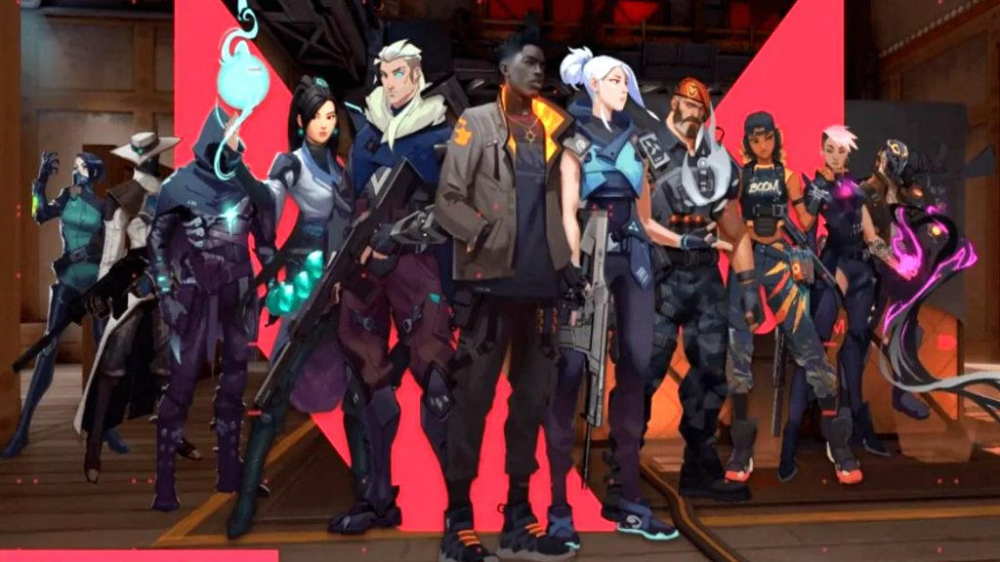

Valorant fue anunciado con el nombre en clave "Proyecto A" el 15 de
octubre de 2019 a través de la edición del décimo aniversario de Riot
Games de su blog "Riot Pls", que celebró 10 años desde el lanzamiento
de su videojuego de arena de batalla en línea multijugador League of
Legends. En un video de anuncio, Anna "SuperCakes" Donlon, la
productora ejecutiva de Valorant, describe el juego como un "tirador
táctico basado en personajes" que se centra en aspectos competitivos e
incluye disparos precisos. Ella también afirma que el juego tiene
lugar en una "Tierra hermosa y próxima al futuro" y presenta un
"elenco letal de personajes, cada uno con sus propias habilidades
únicas". Riot explica además que el juego se mantendrá fiel a la
jugabilidad altamente consecuente de otros tiradores tácticos
competitivos con la adición de habilidades de personajes únicos que
crean y abren oportunidades tácticas.
Agentes:
Los Agentes están compuestos por individuos conocidos como Radiantes
que tienen habilidades hipernaturales o que poseen tecnología Radiant.
Cada uno tiene su propia Habilidad de Firma y una Habilidad máxima
Utilizada para crear y permitir oportunidades tácticas. Riot Games ha
declarado que planean lanzar Valorant con 12 Agentes, de los cuales 8
son conocidos actualmente:

Brimstone
Cypher
Jett
Omen
Phoenix
Sage
Sova
Viper
Reyna
Killjoy
Skye
Yoru
Armas:
Los jugadores podrán seleccionar una variedad de armas diferentes,
cada una con sus propios atributos para satisfacer estilos de juego y
metas específicos, que dependerán de disparos precisos y de alto
impacto. Se pueden comprar nuevas armas durante la Fase de Compra
usando créditos. Están separados por dos categorías, armas secundarias
y armas primarias, con diferentes clases de armas, que incluyen:
Armas cortas
Subfusiles
Rifles
Escopetas
Armas pesadas
Rifles Francotirador
Cuchillo
Habilidades y Escudos
A diferencia de las armas, cada agente tiene su propia habilidad
exclusiva de firma que los jugadores obtienen gratis en cada ronda.
Tienen dos habilidades regulares, cuyas cargas deben comprarse entre
rondas pero persisten hasta su uso. También tienen una habilidad
máxima que debe cargarse al matar. Los jugadores también pueden
comprar dos tipos de escudos: escudos ligeros y escudos pesados.